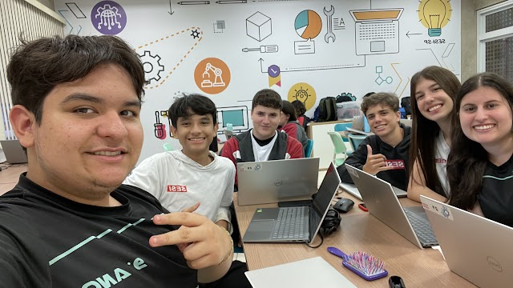

Ao decorrer deste trabalho, nosso grupo aprendeu várias lições
importantes, principalmente como a gratidão é fundamental, que foi
abordado nas aulas com a professora Flávia Viana, e como ela influencia
a nossa saúde, tanto física como mental. Ser grato pelas coisas do dia a
dia e pelos acontecimentos, mesmo os mais simples, afeta positivamente o
nosso bem estar. As mensagens sobre gratidão e as histórias inspiradoras
presente no nosso trabalho, nos motivam e influenciam a reconhecer e ser
mais gratos pelas coisas que acontecem na vida. Neste projeto,
conseguimos trabalhar bem em equipe, dividindo as tarefas e
responsabilidades sempre auxiliando aqueles que precisam. Também
aplicamos o nosso conhecimento sobre frontend e backend, ensinados pelo
professor Antonio Tupinamba e Leandro Grosso, usando o modelo MVC
(Model, View, Controller) para construir nosso site dinâmico com o uso
de API e banco de dados.
